中文
中文M0sense 上手使用
更新历史
| 日期 | 版本 | 作者 | 更新内容 |
|---|---|---|---|
| 2023-02-03 | v0.2 | wonder |
|
| 2022-11-28 | v0.1 | wonder |
|
因为固件不同，m0sense 可能显示不出 U 盘，需要自己根据 烧录 bin 文件 篇章的内容烧录后才能显示 U 盘。
初见
因为固件不同，可能不会有频谱图显示。
通电后板子上的 led 亮起，且屏幕显示出周围环境音的频谱图。
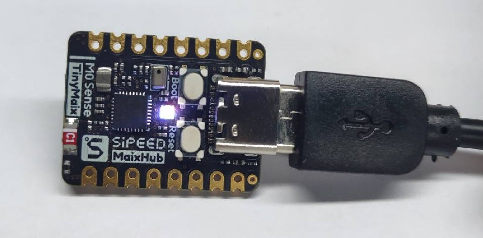
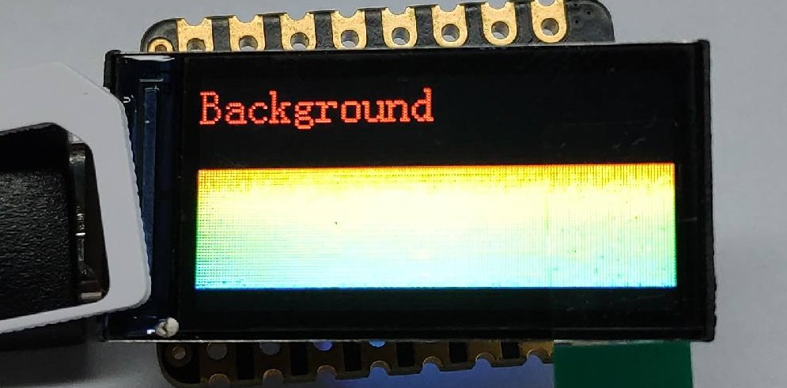
U 盘烧录
对于 M0sense 我们提供了使用虚拟 U 盘拖拽烧录固件的方式。
因为固件不同，m0sense 可能显示不出 U 盘，需要自己根据 烧录 bin 文件 篇章的内容烧录后才能显示 U 盘。
按住板子上的 BOOT 键后按下 RESET 键，就会在电脑上显示一个 U 盘了。
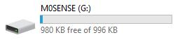
直接将想要烧录的固件拖进 U 盘，成功烧录后 U 盘会自动弹出且板子会自动复位来重新加载新固件。
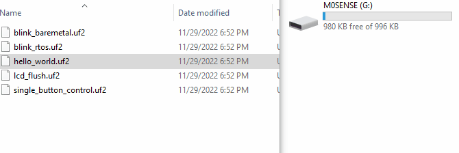
这边提供了几个 Demo 固件 点我跳转，可以直接拖拽到 U 盘查看烧录结果，其对应的源码均可在 github 上面获取。
下面是这几个 demo 固件的说明与效果展示
hello_world.uf2
通过 U 盘烧录方式将它烧录进板子后，可以通过串口软件打开板子串口，可以看到板子打印出的 Hello,World
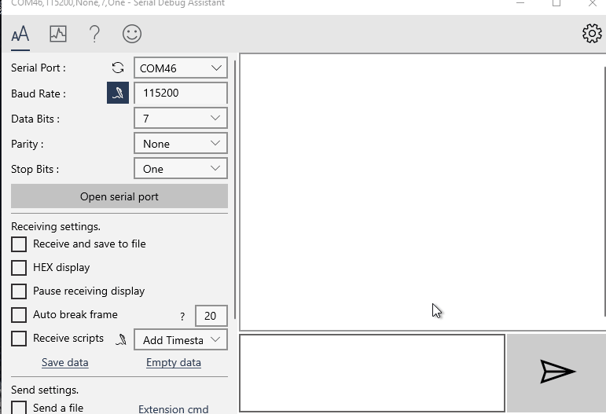
blink_baremetal.uf2
拖拽到 U 盘烧录完后，断电重新连接一下板子，LED 开始闪灯。打开串口后会显示灯的状态。
- 打开串口软件
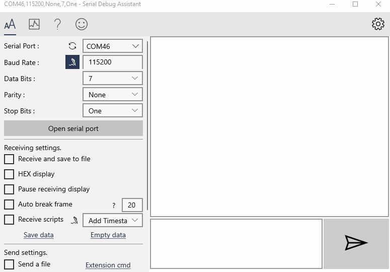
- LED 闪灯
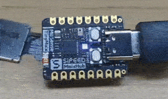
blink_rtos.uf2
这个 demo 效果与上面的一样，只是是基于 RTOS 实现的，上面那个 demo 是裸机程序。
使用串口软件打开串口后才开始闪灯，关闭串口后灯的颜色会保持不变。
- 打开串口软件
- LED 闪灯
lcd_flush.uf2
烧录进板子后，板子配套的 lcd 背景色变化，打开串口会显示当前屏幕颜色的数值。
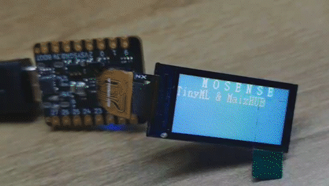
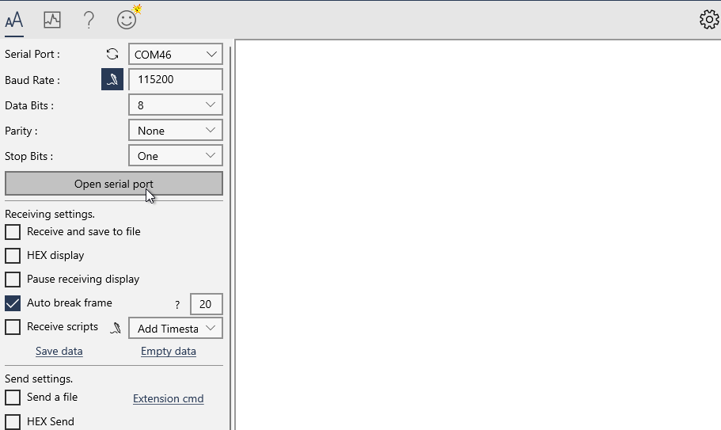
imu.uf2
烧录进板子后，从串口可以看到板子上面 6 轴 IMU (惯性传感器)的数据。
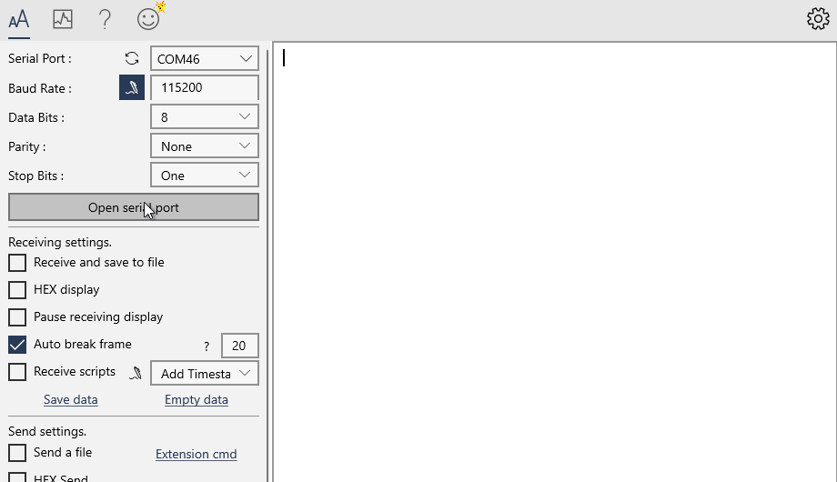
single_button_control.uf2
烧录到板子中后，按下 BOOT 键，LED 会切换颜色，串口会打印当前 LED IO 状态。
具体逻辑可以查看源码。
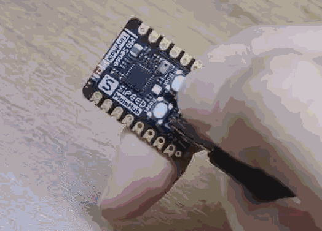
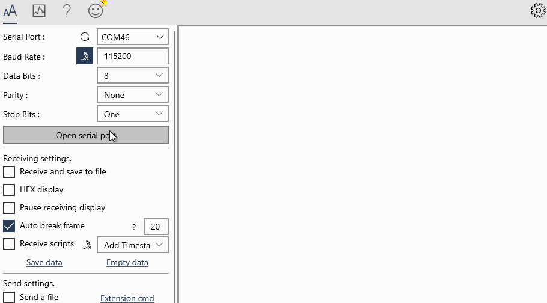
audio_recording.uf2
烧录进板子后，串口会持续打印麦克风所获得的周围环境音的 16bit pcm 格式数据。
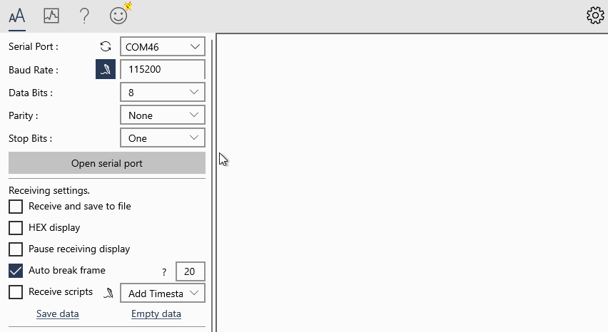
SDK 环境搭建
M0sense 要求在 Linux 环境下进行编译。
获取例程仓库
git clone https://gitee.com/Sipeed/M0sense_BL702_example.git
最终结构树如下
sipeed@DESKTOP:~$ tree -L 1 M0sense_BL702_example/
M0sense_BL702_example/
├── LICENSE # 许可证文件
├── README.md # 仓库说明
├── bl_mcu_sdk # SDK 文件
├── build.sh # 编译脚本
├── m0sense_apps # 例程源码
├── misc # 其他应用
└── uf2_demos # 例程文件
在例程目录下，获得 SDK 仓库
仓库很大，400M 以上。
cd M0sense_BL702_example
git clone https://gitee.com/bouffalolab/bl_mcu_sdk
最终得到的结构树应如下(截取部分)：
sipeed@DESKTOP:~$ tree -L 2 M0sense_BL702_example/
M0sense_BL702_example/
├── LICENSE # 许可证文件
├── README.md # 仓库说明
├── bl_mcu_sdk # SDK 文件
│ ├── README_zh.md # SDK 中文说明
│ ├── ReleaseNotes # SDK 发布说明
│ ├── bsp
│ ├── cmake
│ ├── components
│ ├── docs
│ ├── drivers
│ ├── examples
│ ├── project.build
│ ├── tools
│ └── utils
├── build.sh # 编译脚本
├── m0sense_apps # 例程源码
├── misc # 其他应用
└── uf2_demos # 例程文件
在例程目录下，获取编译工具链
git clone https://gitee.com/bouffalolab/toolchain_gcc_sifive_linux
最终得到的结构树应如下(截取部分)：
sipeed@DESKTOP:~$ tree -L 2 M0sense_BL702_example/
M0sense_BL702_example/
├── LICENSE # 许可证文件
├── README.md # 仓库说明
├── bl_mcu_sdk # SDK 文件
│ ├── README_zh.md # SDK 中文说明
│ ├── ReleaseNotes # SDK 发布说明
│ ...
├── build.sh # 编译脚本
├── m0sense_apps # 例程源码
├── misc # 其他应用
├── toolchain_gcc_sifive_linux # 编译工具链
│ ├── bin # 编译链可执行文件路径
│ ├── lib # 动态库文件
│ ...
└── uf2_demos # 例程文件
在例程目录下，打补丁
首先确定是在 M0sense_BL702_example 目录下。
打补丁前需要先设置一下用户名和邮箱, 随便设置一个
cd bl_mcu_sdk
git config user.email "m0sense@sipeed.com"
git config user.name "tinymaix"
设置完后可以打补丁了。
cd ..
./build.sh patch
出现 Apply patch for you! 说明成功打补丁了，可以接着下面的操作了。
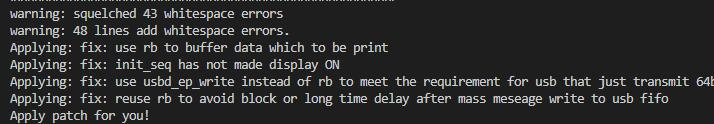
配置编译工具链路径
以后每次开始编译都需要执行一次这个来配置下编译工具链路径。
首先需要知道 M0sense_BL702_example 的路径。
sipeed@DESKTOP:~$ pwd
/home/lee/M0sense_BL702_example
我们复制上面执行 pwd 后的结果（每个人的会不一样）然后在后面加上 /toolchain_gcc_sifive_linux/bin，然后执行下面的命令，就配置完路径了
PATH=$PATH:/home/lee/M0sense_BL702_example/toolchain_gcc_sifive_linux/bin
根据每个人电脑不同执行完上述命令后可以使用下面的命令 riscv64-unknown-elf-gcc -v 来看所配置的工具链是不是正确了。
配置成功了的结果和下面类似。
sipeed@DESKTOP:~$ riscv64-unknown-elf-gcc -v
Using built-in specs.
COLLECT_GCC=riscv64-unknown-elf-gcc
COLLECT_LTO_WRAPPER=/home/lee/M0sense_BL702_example/toolchain_gcc_sifive_linux/bin/../libexec/gcc/riscv64-unknown-elf/10.2.0/lto-wrapper
Target: riscv64-unknown-elf
没有成功的话会提示没找到 riscv64-unknown-elf-gcc，自己再重新配置一下
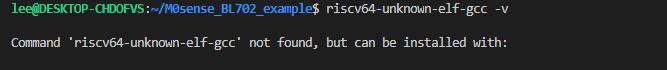
编译 demo
首次编译 demo 前，需要在自己的电脑上编译一下固件转换工具来为了直接 U 盘拖拽烧录。
确定自己是在 M0sense_BL702_example 目录下执行下面的命令。
sudo apt install gcc # 安装适用于自己电脑的 gcc
gcc -I libs/uf2_format misc/utils/uf2_conv.c -o uf2_convert # 编译出固件转换工具
然后就可以编译 demo 了
./build.sh m0sense_apps/blink/blink_baremetal
最终生成的 U 盘烧录的 uf2 文件在 uf2_demos 目录下，bin 文件之类的在 bl_mcu_sdk/out 文件夹下。
SDK 编译注意事项
- 第一次搭建环境最好自己编译一份 uf2 文件转换工具
- 每次新开终端编译记得配置一下 编译工具链路径
- SDK 编译失败时确定自己是按照 编译 demo 里面所说的使用
./build.sh m0sense_apps/blink/blink_baremetal命令来执行编译的，而不是./build.sh m0sense_apps/blink/blink_baremetal/（注意结尾处的/）命令
烧录 bin 文件
有时候可能由于某些原因需要烧录 bin 文件，这里写一下烧录方法。
给 M0sense 烧录需要用到博流官方烧录工具，前往 https://dev.bouffalolab.com/download 下载名称为 Bouffalo Lab Dev Cube 的文件。解压后就得到了用来烧录板子的应用程序。
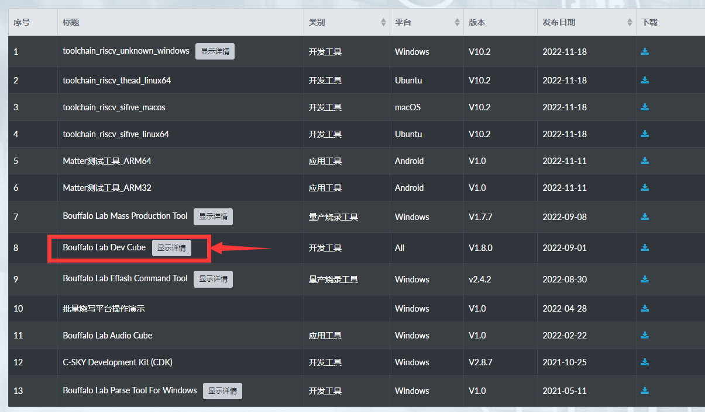
解压后的文件夹中主要关注 BLDevCube、 BLDevCube-macos 和 BLDevCube-ubuntu 三个文件，用于在不同系统启动这个烧录工具。
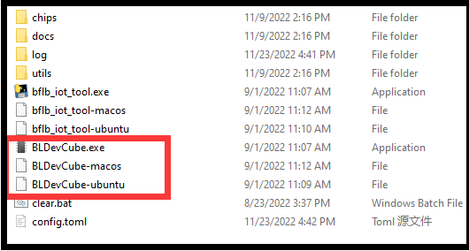
然后使用镊子或其他金属短接上板子上的 3.3V 引脚和 boot 引脚，然后在给板子通电，这样板子进入烧录模式了。可以在电脑设备管理器中看到出现了一个串口设备。
| 短接引脚 | 设备管理器中的串口设备 |
|---|---|
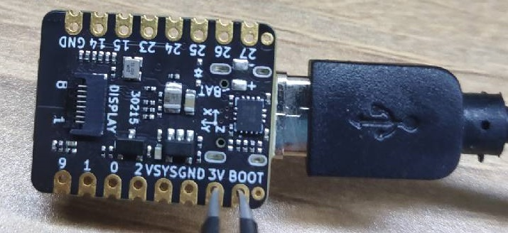 |
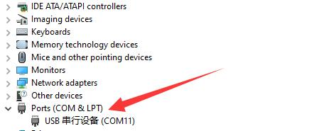 |
接着打开 BLDevCube 烧录软件（根据自己系统选择），选择 BL702 芯片，在打开的软件界面选择 MCU 模式，选择想要烧录进去的固件。默认的固件可以在这里下载到: Click me
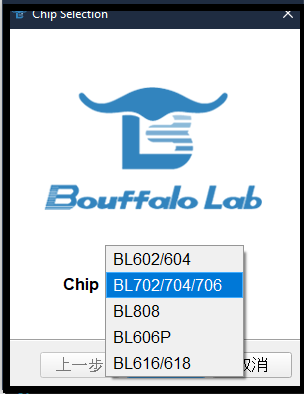 |
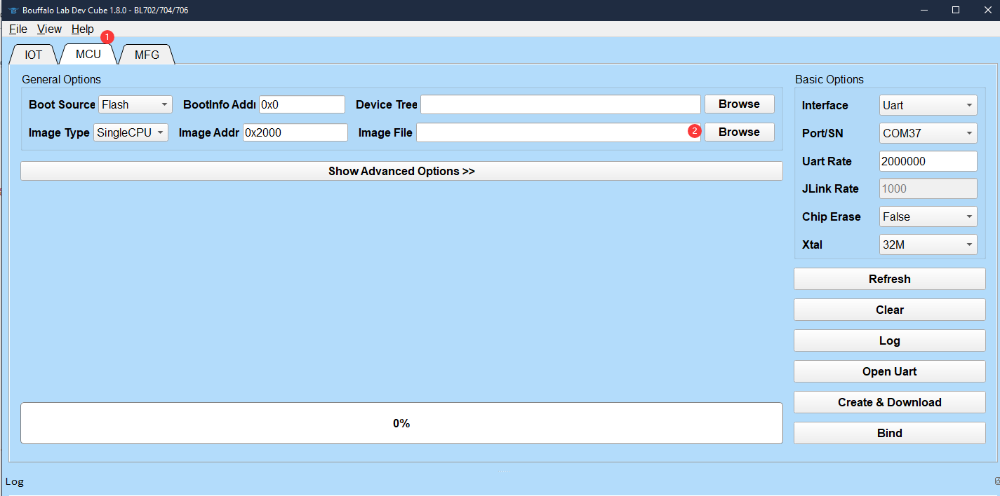 |
点击 Refresh，选择唯一的串口（如果看到的不是唯一串口，重新短接 boot 引脚和 3.3v 引脚后再上电使 M0sense 进入下载模式），设置波特率 2000000， 点击下载烧录。
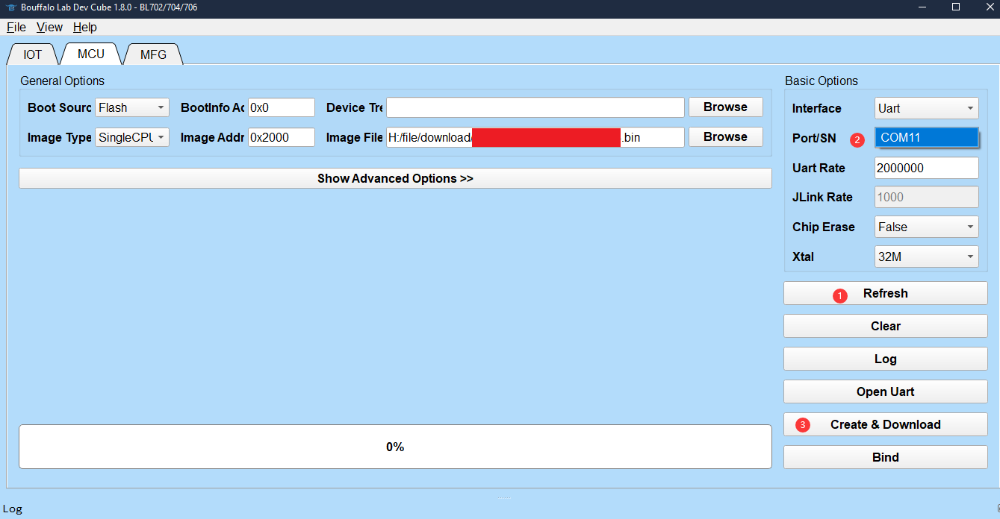
烧录结束后，重新插拔一次 USB 来重新启动 bl702 以应用新的固件。
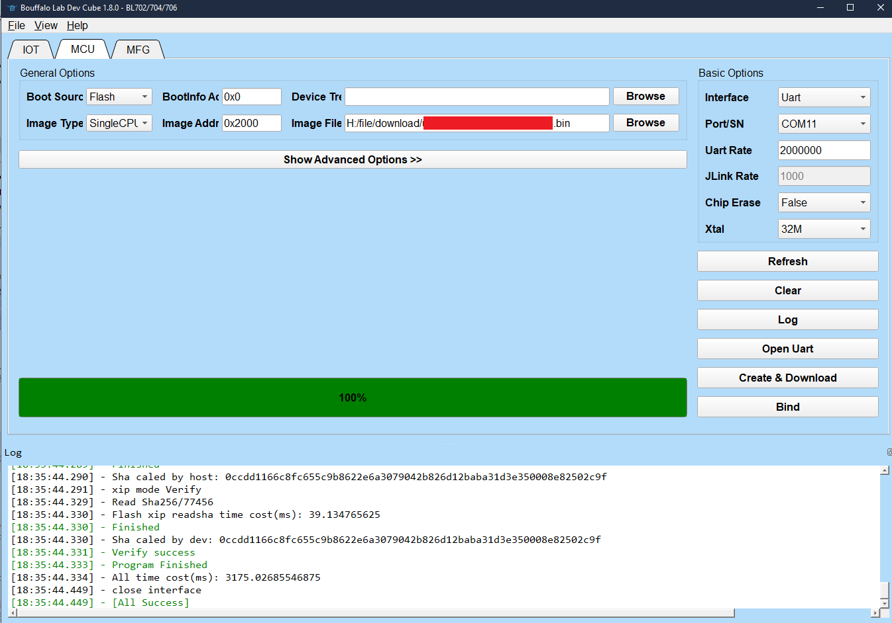
补充说明
板子上有 BOOT 按键和 BOOT 引脚这两处 BOOT 丝印说明。
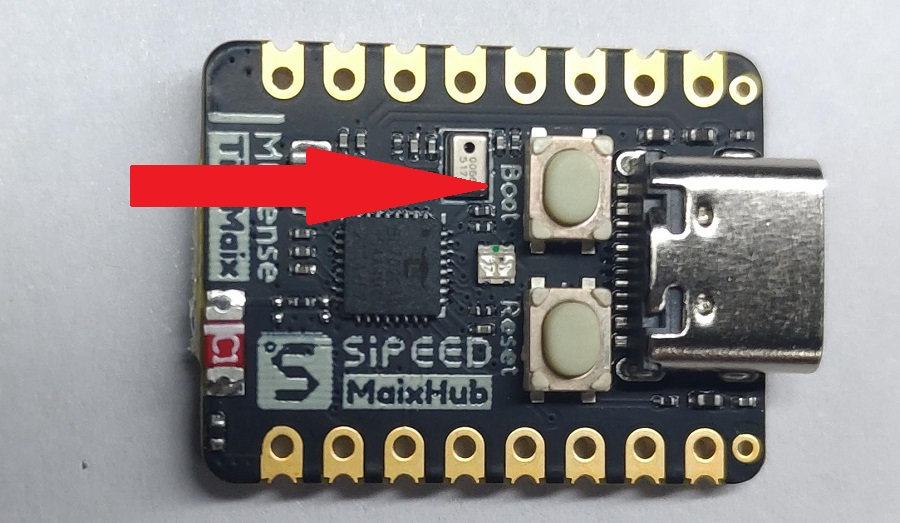
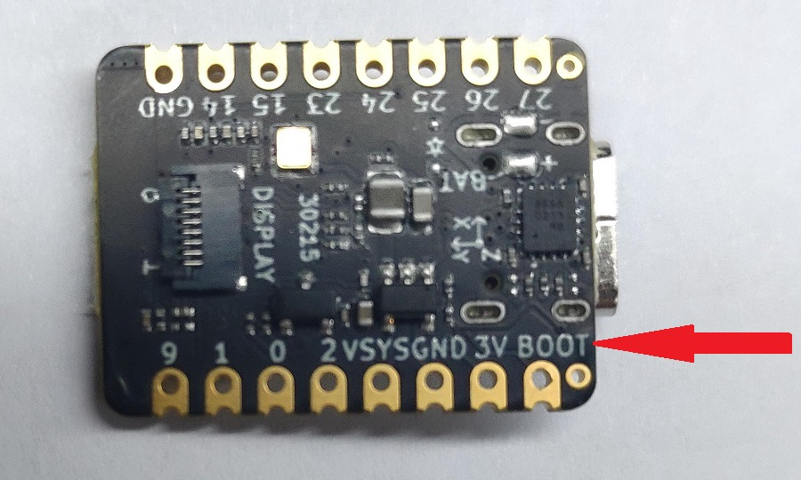
上面可以看出来两个有 BOOT 说明，在原理图中分别如下：
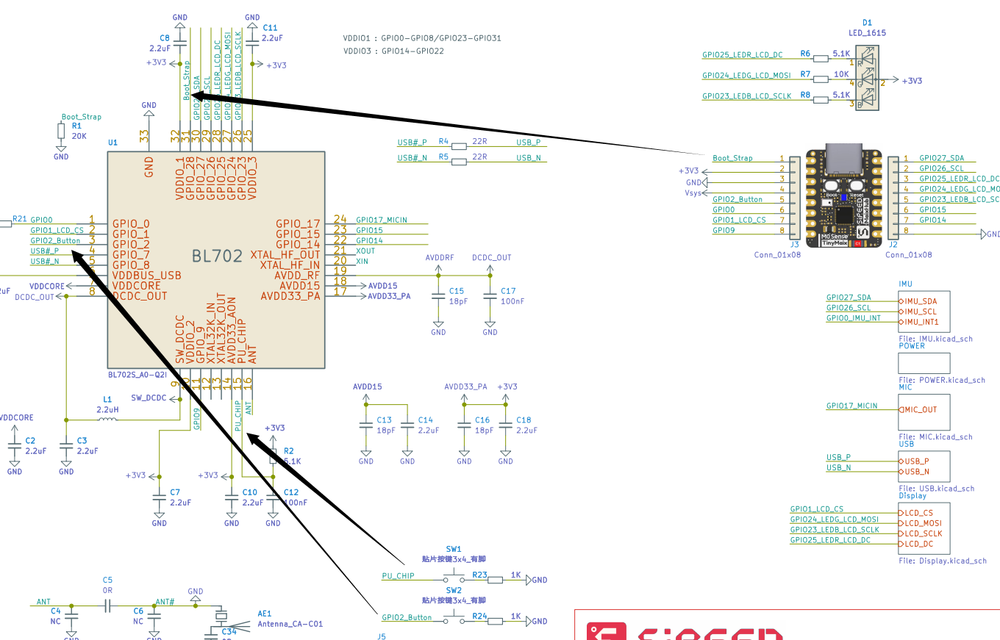
从 原理图 可以看到。两个按键分别连接到了 GPIO_2 和 AU_CHIP，根据芯片参考手册可以知道 AU_CHIP 引脚是芯片的复位引脚，因此对应着 Reset 按键， 所以另一个按键为自定义的软件 Boot 引脚，需要搭配固件才能通过 U 盘烧录方式来快速烧录。
上面标识的原理图中， Boot_Strap 为芯片的硬件 BOOT 引脚，上电前将他拉高就可以进入完整固件烧录模式 （需要配合官方烧录工具来烧录固件）。
U 盘烧录模式是基于软件实现的一种特殊的烧录方式，串口烧录方式是芯片最原始的烧录方式。